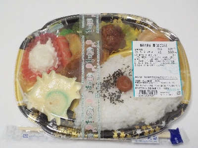
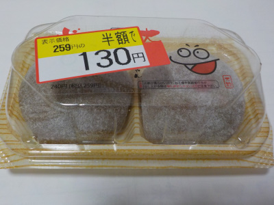
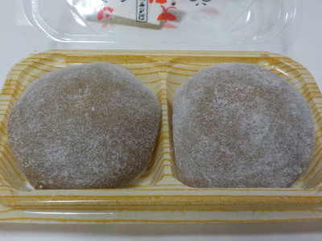

いいものを探そう ～出雲らへん～
島根県出雲市高松町639-1
2024/05/04
大惣の幕の内弁当。

お惣菜系の幕の内弁当の中に、茶碗蒸しが入ったものがあるんですね。凄いな。
これは是非食べてみたいと買いました。
茶碗蒸しは汁がこぼれないよう固めてありますが、特に抵抗はなく普通に美味しかったです。
他にもいろいろおかずが入っていますが、それぞれしっかりとした味がって美味しくいただきました。
【大総TOP】
【地域TOP】
【HPTOP】
2024/03/02
大惣の縁むすびおはぎ

王将戦のおやつで話題になったおはぎです。
いい甘さのあんこが均等についていました。食感にムラがなくて美味しかったです。
この均等な感じは家庭では真似出来ないなと思いました。
【大総TOP】
【地域TOP】
【HPTOP】
2019/01/31
大惣のいもクリちゃん

見た感じトチもちぽいものかと思って買ったんですが、中にはあんではなくカスタードクリームが入っていました。

ちょっと焼き芋っぽい感じのカスタードクリーム大福でした。
食後のデザートにいいかなと思いました。
色違いの商品もあったので、次はそっちも食べてみたいです。
【大総TOP】
【地域TOP】
【HPTOP】
【『高松町らへん』の他の情報はこちら】
【おいしいものを食べよう。】【たくさん寝よう。】
【ソロ活をしよう!】【季節感のあることをしよう。】【動画視聴はほどほどに。】【当サイトの全てのコンテンツは無断転載禁止です。】